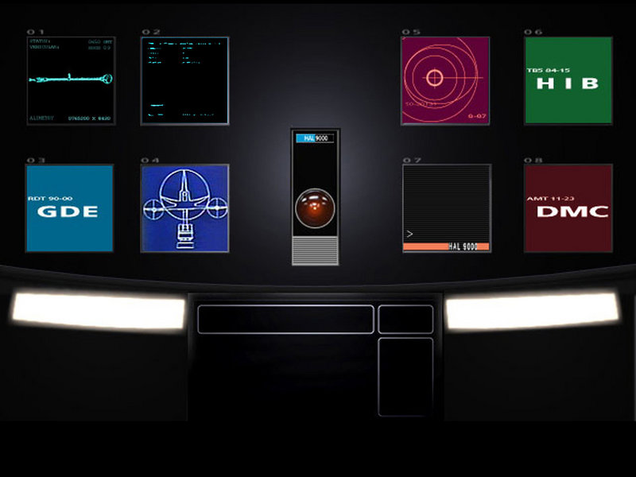

HAL 9000
Heuristically programmed ALgorithmic computer.
HAL 9000 został uruchomiony w laboratoriach HAL w Urbana, Illinois, 12 stycznia 1997 . Jego pierwszym instruktorem był dr Chandra . Jako największe osiągnięcie przemysłu informatycznego i najbardziej zaawansowany projekt sztucznej inteligencji,
został zainstalowany na statku Discovery One jako kontroler misji. Zarządza wszystkimi aspektami technicznymi misji i kontroluje jej przebieg. Jego interfejs został zoptymalizowany pod kątem komunikacji z człowiekiem – komunikacja głosowa i
bardzo rozwinięty podsystem emocjonalny czynią go rozmówcą o intelekcie człowieka.

HAL 9000 to komputer kwantowy to maszyna, której działanie jest oparte na fizyce kwantowej.
W przeciwieństwie do zwykłych komputerów, w których przetwarzanie informacji bazuje na bitach, mogących przyjmować wartość „0” albo „1”, w tym przypadku podstawą są kubity (czyli bity kwantowe) przyjmujące tzw. superpozycję, w której „0” i „1” występują w tym samym czasie.
Właśnie dzięki temu między innymi możliwa do osiągnięcia jest znacznie większa wydajność: równocześnie można bowiem prowadzić kilka etapów obliczeń albo też rozważyć kilka wariantów rozwiązania jakiegoś problemu.
W razie dodatkowych pytań skorzystaj z naszej dodatkowej bazy danych o komputerach kwantowych !